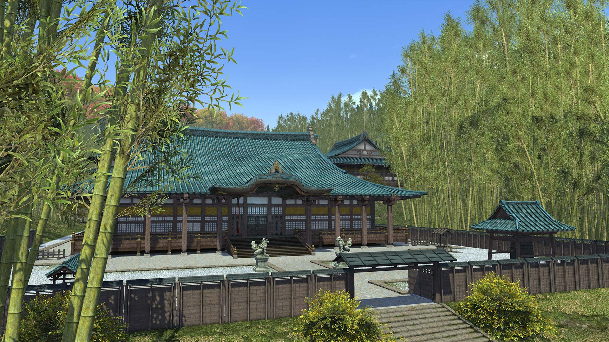
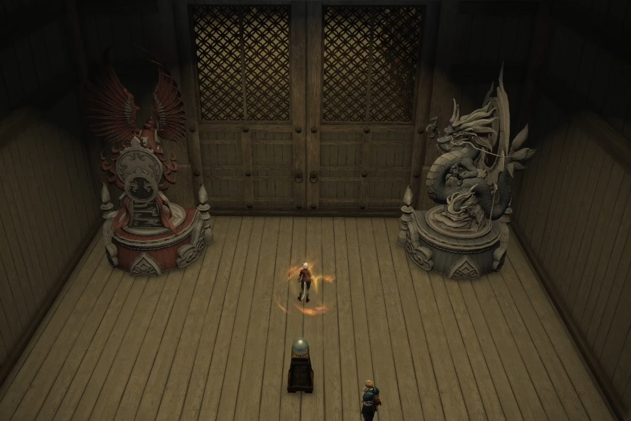
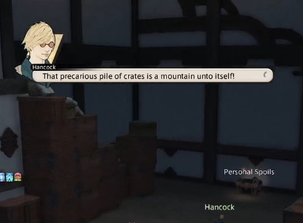
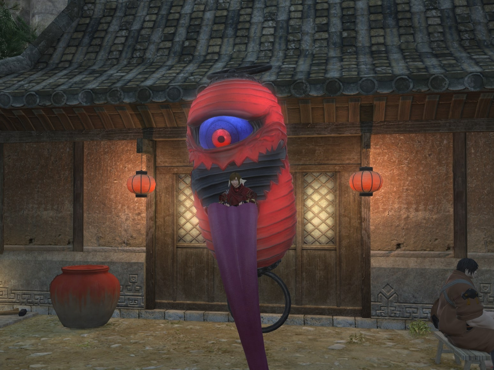

tags:
- FFXIV
- Guide
- Dungeon
- Mount
- Rokkon
- Exorcism
Level: "90"
Item Level: "605 (Sync: 665)"
Difficulty: Normal
Party Size: 1-4 (No job requirements)
Unsync: Not allowed
Time Limit: 90 Minutes
Entrance: Kugane
Patch: "6.45"
icon: LiSwords
title: Mount RokkonMount Rokkon

On Hingashi's westernmost isle of Shishu lies the long-venerated Mount Rokkon. Once refuge for humble monks and weary pilgrims, the holy site lately fell to a host of malevolent mononoke, spurring the local liege lord to take the unprecedented step of inviting ijin to assist in reclaiming its slopes. As in his wont, Hancock has secured the promise of valuable rewards in exchange for his—and your—assistance, but each of these treasures has a life of its own...
- In-game description
General Info
Mount Rokkon is a level 90 Variant Dungeon introduced in patch 6.45 with Endwalker.
| Name | Mount Rokkon |
|---|---|
| Level | 90 |
| Item Level | 605 (Sync: 665) |
| Difficulty | Normal |
| Party Size | Flexible (1-4 man any role) |
| Unsyncing | Not Allowed |
| Time Limit | 90 Minutes |
| Duty Finder | V&C Dungeon Finder |
| Tomestones |  40 40  15 15 |
| Entrance | Kugane (X:8.9 Y:8.8) |
| Patch | 6.45 |
To unlock this Variant Dungeon you must complete the associated quests starting on Mononoke Aware
Exorcism Records
Each exorcism is gained by completing one of the twelve endings.
These are split by three paths that you must choose.
Left Path
Exorcism 1: Gift of the Onmyoj
- Ignore the statues and interact with the orb in the auspice room.
- Interact with the katana box in the following room.
Moko the Restless will gain Untempered Sword which makes AoEs from the edge of the arena.
───── ⋆⋅☆⋅⋆ ─────
Exorcism 2: The Crimson Sword
- Ignore the statues and interact with the orb in the auspice room.
- Ignore with the katana box in the following room.
Moko the Restless will gain Moonless Night, a set of half-room circle AoEs.
───── ⋆⋅☆⋅⋆ ─────
Exorcism 3: A Tale of Dead Men

- Face the Suzaku statue south and the Seiryu statue east. Rotate them by interacting.
- Interact with the orb after.
- ALLOW the Shishu Apa to complete its Water III cast to extinguish the lanterns.
Moko the Restless will gain Tengu-Yobi, line knock-backs from the edge of the arena.
───── ⋆⋅☆⋅⋆ ─────
Exorcism 4: Forging a Legacy
- Face the Suzaku statue south and the Seiryu statue east. Rotate them by interacting.
- Interact with the orb after.
- STOP the Shishu Apa from completing it's Water III cast by interrupting it.
Moko the Restless will gain Spirit Spark. AoEs on the arena accompanied with heads that float towards players and do damage on contact.
───── ⋆⋅☆⋅⋆ ─────
Middle Path
Exorcism 5: The Luthier And The Songstress
- Continue the path until the pile of crates.
- Ignore the crates and go right.
- Reach the Shishu White Baboon and spare it by choosing the first option:
- "Very well - we have a deal."
The baboon will spawn during the Gorai the Uncaged fight, chain players to it, and start casting Self-Destruct. Kill the baboon before the cast finishes.
───── ⋆⋅☆⋅⋆ ─────
Exorcism 6: Lost to Avarice
- Continue the path until the pile of crates.
- Ignore the crates and go right.
- Reach the Shishu White Baboon and defeat it by choosing the second option:
- "Give me a moment to think..."
Gorai the Uncaged will summon thunder orbs with Thundercall, spawn AoEs with Humble Hammer, and combine the two abilities.
───── ⋆⋅☆⋅⋆ ─────
Exorcism 7: Beyond the Lantern's Light

- Continue the path until the pile of crates.
- Climb the pile of crates to the second floor.
- Pull the Woven Rope.
- Defeat the Shishu Chochin and continue to the boss.
Gorai the Uncaged will gain Worldly Pursuit, a rotating plus-shaped (+) AoE as well as Biwa Breaker which are successive hits of raidwide magic damage.
───── ⋆⋅☆⋅⋆ ─────
Exorcism 12: The Ogiseru's Fate (Secret Ending)
- Continue the path until the pile of crates.
- Climb the pile of crates to the second floor.
- Pull the Woven Rope.
- DO NOT kill the Shishu Chochin on the second floor.
- Aggro the Shishu Chochin and pull them down to the main floor.
- Kill them one at a time facing the lanterns.
The monster must be facing the lantern when it dies.
It will cast a cone AoE upon death that must hit the lantern to light it up.
This must be done for all three lanterns.
───── ⋆⋅☆⋅⋆ ─────
Right Path
Exorcism 8: The Common Man's Courage
- Ignore the Rokkon Sentinel.
- Clean all four Stones of Protection on the path leading up.
Shishio will use Hanting Cry that will summon wildlife which will do a series of AoEs.
───── ⋆⋅☆⋅⋆ ─────
Exorcism 9: Sound of the Stone
- Ignore the Rokkon Sentinel.
- Ignore the four Stones of Protection on the path.
Shishio wil use Yoki which spawns AoEs that cover the arena with shifting sands which inflict Six Fulms Under. If this debuff expires, the player will die.
Stand in the safe spot to remove the debuff then move into the sands to avoid getting hit by the massive AoE.
───── ⋆⋅☆⋅⋆ ─────
Exorcism 10: The Seal of Silence
- Remove the Rokkon Sentinel.
- Use the emote Eastern Bow (/ebow) in front of the shrine.
- Topple Iwakura.
Shishio will use Haunting Cry that will summon monsters with arrows, hide behind the correct one.
───── ⋆⋅☆⋅⋆ ─────
Exorcism 11: Seasons of the Fleeting
- Remove Rokkon Sentinel.
- Use the emote Eastern Bow (/ebow) in front of the shrine.
- Topple Ancient Tree
Shishio will use Haunting Cry that will summon ghosts which do damage on contact.
───── ⋆⋅☆⋅⋆ ─────
Rewards
Personal Loot
Yozakura the Fleeting
| Item | Quantity |
|---|---|
| Rokkon Potsherd | 1 |
Moko the Restless
| Item | Quantity |
|---|---|
| Rokkon Potsherd | 2 |
| Moko the Restless Card | 1 |
Gorai the Uncaged
| Item | Quantity |
|---|---|
| Rokkon Potsherd | 2 |
| Gorai the Uncaged Card | 1 |
Shishio
| Item | Quantity |
|---|---|
| Rokkon Potsherd | 2 |
| Shishio Card | 1 |
Enenra
| Item | Quantity |
|---|---|
| Rokkon Potsherd | 2 |
| Enenra Card | 1 |
Treasure Coffers
| Item | Quantity |
|---|---|
| Magicked Prism (Onibi) | 1 |
| Shishu Reiseki | 1 |
| Far Eastern Brazier | 1 |
| Stone Toro Lantern | 1 |
| Planted Toro Lantern | 1 |
| Tsukumogami Parasol | 1 |
| Komainu Statue | 1 |
| Okuri Chochin | 1 |
| Shiromaru | 1 |
| Kuromaru | 1 |
Mount
Completing all 12 paths unlocks the Burabura Chochin Whistle.

Rokkon Potsherd Rewards
| Name | Type | Cost |
|---|---|---|
| Modern Aesthetics - Ambitious Ends | Hairstyle | 6 |
| Ballroom Etiquette - Scrupulous Citations | Emote | 9 |
| Rose-colored Spectacles | Fashion Accessory | 3 |
| Looping in the Deepest Fringes Orchestrion Roll | Orchestrion Roll | 9 |
| Shishu Bujin Eboshi | Glamour | 9 |
| Shishu Bujin HItatare | Glamour | 18 |
| Shishu Bujin Kiribakama | Glamour | 9 |
| Shishu Obutozori | Glamour | 9 |
| Shishu Gozen Kanzashi | Glamour | 9 |
| Shishu Gozen Kochiki | Glamour | 18 |
| Shishu Gozen Hakama | Glamour | 9 |
Achievements
| Name | Points | Task |
|---|---|---|
| The Lion Kingslayer | 5 | Defeat Shishio in the Mount Rokkon variant dungeon. |
| Rattling The Uncaged | 5 | Defeat Gorai the Uncaged in the Mount Rokkon variant dungeon. |
| Cut Above The Restless | 5 | Defeat Moko the Restless in the Mount Rokkon variant dungeon. |
| Up In Smoke | 5 | Defeat Enenra in the Mount Rokkon variant dungeon. |
| Mononopeke | 10 | Unlock all exorcism records on Mount Rokkon. |
| Mapping the Realm: Mount Rokkon | 10 | Discover every location within the Mount Rokkon variant dungeon. |
───── ⋆⋅☆⋅⋆ ─────
Date: 28/04/2024
Collected by: W'eylyn Mavourneen